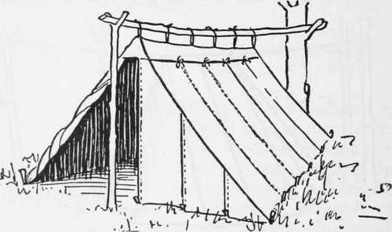
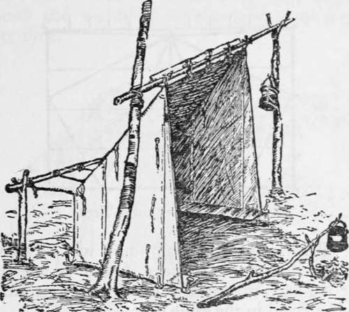
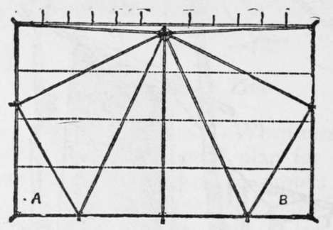
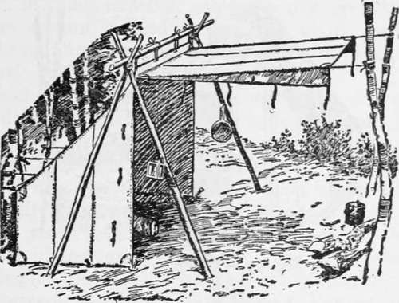
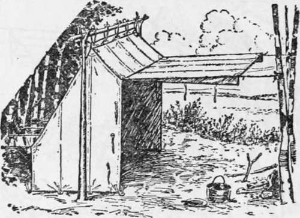

Types Of Light Tents. Part 6
Description
This section is from the book "Camping And Woodcraft", by Horace Kephart. Also available from Amazon: Camping and Woodcraft.
Types Of Light Tents. Part 6
Fig. 58. Ross Alpine Tent.
Separable Shelter Tents
When men travel in pairs, going light, it is a good plan for each to carry a " shelter-half," adequate to protect him if he should become separated from his companion, and so fitted with ridge flap and tapes that it can quickly be attached to its mate to form a low, broad wedge tent.
Fig. 59. Separable Shelter Tent.
The old-fashioned army shelter half was merely a rectangle of 7 1/2 or 8-oz. duck, two of which, buttoned together, made an A-shaped roof open at both ends. It was little protection against shifting winds. In the present military shelter tent, the halves, when joined, close at the rear end, which is lower than the front. A rifle stood up at the front is all the support needed, and it can instantly be recovered for emergency use by kicking the butt free.
For hikers, etc., a good separable tent consists of two lean-tos that close at both ends when joined (Fig. 59). Sometimes these halves are made with a 12 to 18-inch wall (Fig 60). Each half should be about 7 ft. long, 3 1/2 or 3 3/4 ft- wide, and 4 1/4 ft. high, weighing about 3 1/2 lbs.
Fig. 60. Shelter Half with Wall.
Shelter Cloths
For side trips from camp, a simple rectangle of thin, closely woven waterproof cloth, with grommets and tapes, is all one needs in moderate weather. Set it up at an angle, facing the fire, and, if need be, thatch one or both sides with evergreen boughs or other windbreak. The cloth is useful as a " tarp " about camp and as a wrap for packs on the trail. One that I use, of Tanalite, 7x9 ft., weighs 2 1/2 lbs. Set up with a 9-ft. slant, it stands 6 ft. high in front and shelters 7x5 ft. of ground. A small pyramidal mosquito bar should be taken along in summer.
Tarpaulin Tent
A larger shelter cloth cut as in Fig. 61, the seams reinforced with tapes, beckets for tent pins added along three sides, and door tapes along the other, as indicated, has many uses. It serves, as one wishes, either for a simple lean-to shelter, a wedge tent open at both ends, a semi-pyramidal enclosed tent, a dining fly, a tarpaulin, a ground-sheet, a pack-cloth, or an emergency sail on a boat. Referring to the diagram, it will be seen that when the triangular corners A and B are tucked under we have practically the George tent, and the cloth is erected in the same way.
Fig. 61. Tarpaulin Tent.
These " tarp " tents are furnished by outfitters ready-made, in various materials, and in sizes from 7^2x12 to 10x13 ft., making semi-pyramidal shelters from 4^4 x9x6 to 7 x 7 x 6^2 ft., waterproofed, weighing from 3^ to 6^4 iDS« Full directions for making one at home are given in The Boy Scout's Hike Book by Edward Cave.
Baker Tent
For a light tent in the hunting season, East or South, I prefer one with a shed-roof, rear wall, and a front that can be closed when one is away for the day, or when a contrary wind springs up with driving rain. Usually the front is left open, and in cold weather a good file with back-logs of green wood is kept going all night, about five feet in front of the tent. Of course, this takes a lot of wood, a good-sized hardwood tree being consumed in a single night, and the labor of chopping is rather severe to any one but a good axeman; but the work is well repaid by the exquisite comfort of lying before the blazing backlogs on a cold night, warm as toast, and breathing deeply the fresh air of the forest. Such a tent is never damp and cheerless, as closed tents are apt to be. The heat rays are reflected downward by the sloping roof, drying the ground and warming one's bed in a comparatively short time.
Fig. 62. Baker Tent.
A baker tent may be set up on shears (Fig. 62), or on stakes (Fig. 63), or on a pole nailed from one tree to another, or in various other ways suggested by the location. At the rear a stake is driven for each corner guy and a pole laid outside it, on the ground, to which the other guys are made fast; or a frame is made.
If the door is stretched straight forward as shown in these illustrations, it will prevent having a fire close in front where it should be. Ordinarily the flap is thrown backward over the roof when a camp-fire is going. A long pole on each side of the tent, run diagonally upward from rear to front, will lift the awning high enough to be out of the way. Howr-ever, I prefer to have the door-flap separate, and so fitted with grommets or eyelets that it can be attached either to the top or to one side of the tent, as preferred. In warm weather, when no all-night fire is needed, it may be hung from the top as an awning, and the tent may be closed up by it when the occupants are away; but on nights when a fire is kept going the flap should be stretched forward vertically from the windward side of the tent front, so as to check the draught from that direction, and the fire should be built close to the tent, the front of which is left wide open.
Fig. 63. Camp-fire Tent.
A fall of snow on the roof of an ordinary baker tent may cause trouble, unless an outside framework has been built and thatched with browse. The camp-fire tent (Fig. 63) has a steeper roof, which sheds rain and snow much better, and it affords more head-room without increased weight. This is the best pattern of baker tent. Sizes and weights of some examples are as follows, the dimensions being width, depth, height of front, center, and back, in turn:
Weight in other materials may be judged from tables previously given of other patterns of tents.
Continue to: